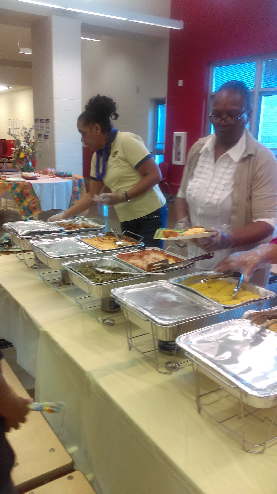

Glenda A. Smith Youth Sanctuary, Inc.
Blog
On Friday, June 11, 2021, a student and I were at New Prospect Baptist Church, for an event formerly called Fish & Loaves. We met a lot of people and informed the attendees about the nonprofit. It was a lot of fun. By having a booth at the event Glenda A. Youth Sanctuary contributed to New Prospect community youth camp that has 80 attendees. Below are photographs of this event.
On Saturday, February 20, 2021, from 4-6, at New Prospect Baptist Church, 1580 Summit Road, we handed out free $25 Kroger cards, 125 free meals representing 42 children and 30 of the meals went to a men’s homeless shelter. The women’s shelter we contacted did not need meals.
On Saturday, December 19, 2020, from 1:30-3;30, at Gabby’s Cafe, 515 West Wyoming, Ave. we handed out meals and Kroger gift cards to 71 families, representing 155 children.